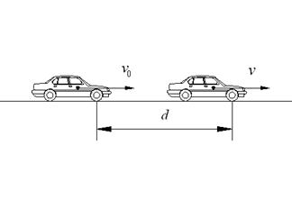

1-2 已知初速度、速度和距離，求加速度
A：
------------------------------------------------------------------

------------------------------------------------------------------
B：
------------------------------------------------------------------

------------------------------------------------------------------

 ：距離(m)
：距離(m)
 ：速度
：速度
 ：初速度
：初速度
 ：時速
：時速
：初時速